Data Engineer in Toronto. Completed Big Data Analytics and Artificial Intelligence Graduate Programs at Georgian College (Barrie/Canada). I have a Bachelor’s degree in Industrial Engineering from Ozyegin University (Istanbul/Turkey).
Interests:
Data Engineering
Python
AI & ML
Data Analytics
Data Visualization
Data-driven Decision Making
Projects & Portfolio
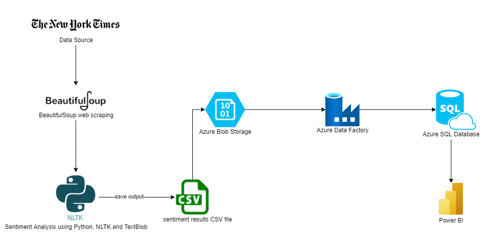
Web scrape and sentiment analysis then using Azure services for data ingestion and storage.
Web Scraping, Sentiment Analysis: Python, BeautifulSoup, NLTK, TextBlob
Other tools: Azure Blob Storage, Azure Data Factory, Azure SQL Database, PowerBI
Link to GitHub Repo
Link to Presentation Video
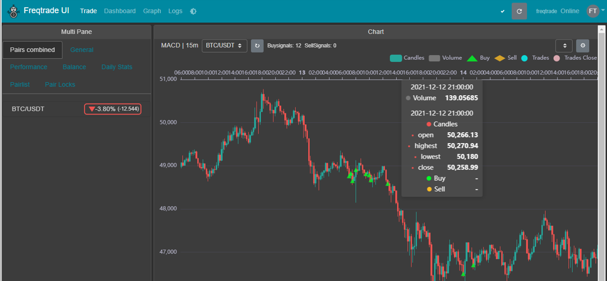
Using AI for Automated Investing in Crypto Markets
Using Freqtrade and Python to develop strategy, backtest, optimize, analyze and automatically invest in Crypto Markets
Data Acquisition: Kraken/Binance API's and FreqTrade.
FreqTrade set up on Ubuntu VM's for strategy and backtesting on live market prices using dry-run simulation additionally setting up bot's parameters and deployed on Microsoft Azure
Python for webscraping twitter and forums to get sentiment scores on specific cryptocurrencies to improve bot
Link to Full Paper
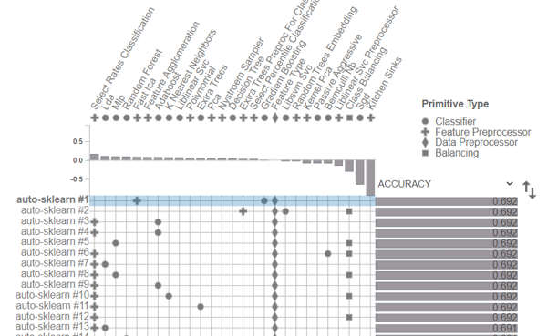
Using Auto-Sklearn to predict price direction of stocks
Using auto-sklearn with the results of sentiment analysis to accurately predict the direction of the asset's price
Test on historical gold price data
Link to notebook (Google Colab)
Credit Card Fraud Detection using PyTorch
EDA and Credit Card Fraud Detection classifier using a Neural Network in PyTorch Framework
Link to notebook
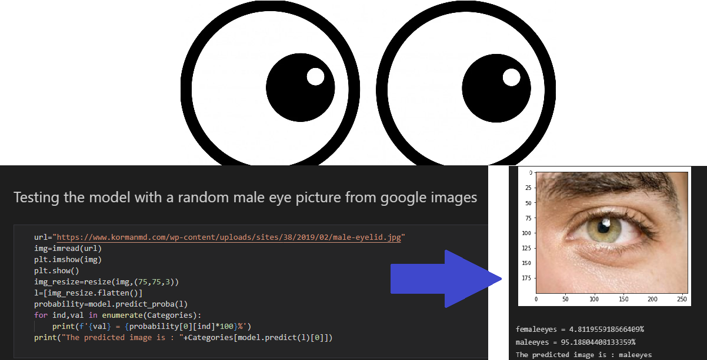
Eyes Classification using TensorFlow Keras
Implemented a classifier with neural networks using Keras Framework to determine gender by image of eyes. Trained with over 10000 images
Comparison of models: Model-1(benchmark):SVM Model-2: MLP and Model-3: CNN
Outcome: CNN model was the best model with 93.1% accuracy
Link to notebook
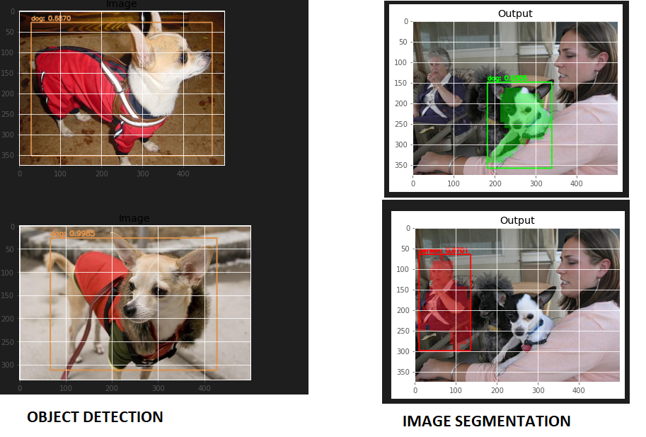
Object Detection using R-CNN and YOLOv3 & Instance Segmentation using Mask R-CNN
Used a data set with about 152 images and 152 annotations of Chihuahua dogs
Link to notebook
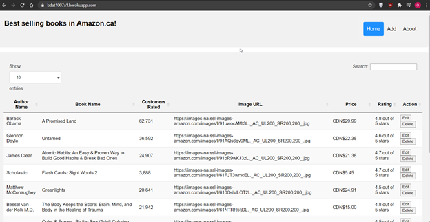
Flask Web Application of best selling books in Canada
List of best selling books fetched from amazon.ca, stored in mongoDB, web app using flask framework with CRUD functionalities.
Web Scraping: Python, BeautifulSoup
Database: MongoDB
Front End: HTML, CSS, JavaScript, Jquery, Ajax
Link to GitHub Repo
Link to Project Website
Link to Presentation Video
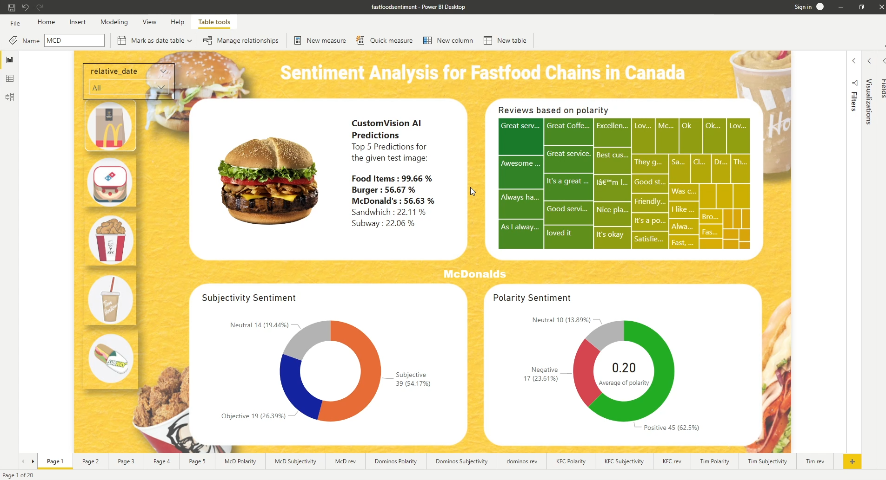
Sentiment Analysis of Fast-food Chains in Canada
Data Scraped from Google reviews using Python and Beautifulsoup. Sentiment Analysis using NLP and data cleaning in python.
Data stored in MongoDB database using pymongo python library.Microsoft Custom Vision AI API to predict an images type and which fast food chain it belongs to
Data visualization and dashboard using Microsoft PowerBI
Link to GitHub Repo
Link to Presentation Video
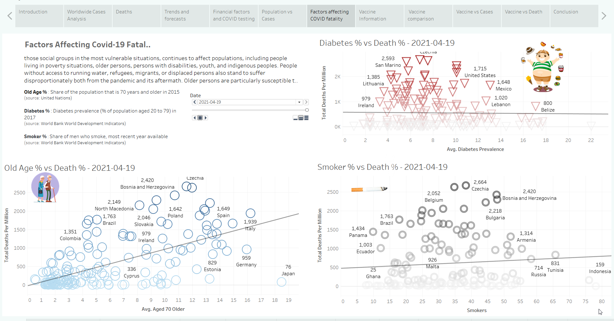
Covid-19 Analysis and Interactive Story Board using Tableau
Data Visualization using Tableau
Data source: John Hopkins University
Link to Tableau file
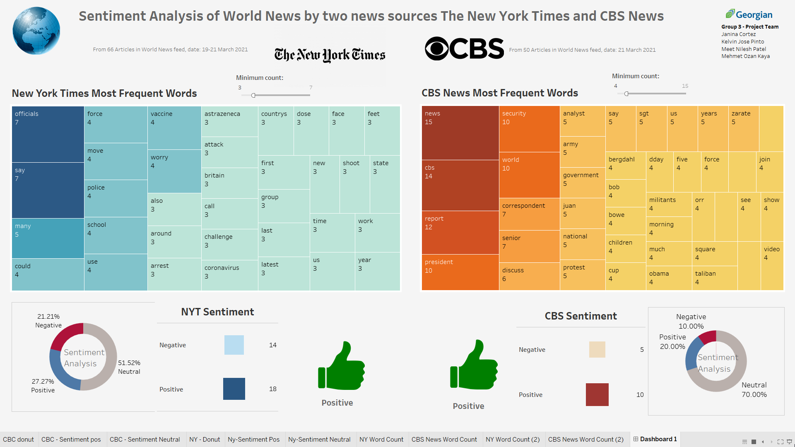
Sentiment Analysis of World News Articles of The New York Times and CBS news
Data scrape using Python and BeautifulSoup.
MongoDB used as Database.
NLP, NLTK and TextBlob used for text processing
Data Visualization using Tableau
Link to GitHub Repo
Link to Tableau file
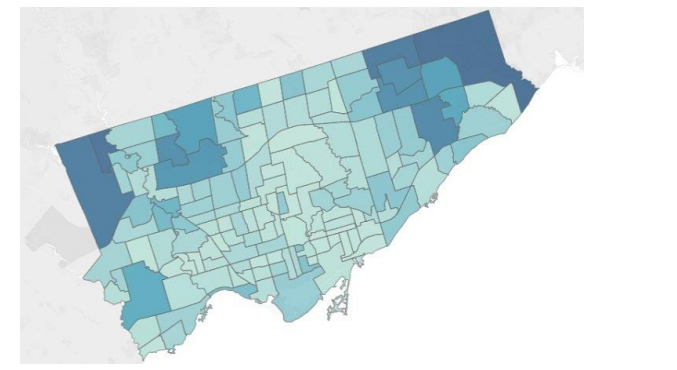
Toronto Covid-19 Hospitalization Analysis and Prediction using Spark ML
Used Spark ML in GCP (Google Cloud Platform) to perform analysis on hospitalizations
Used Python for analysis and data visualization
Used Random Forest Algorithm for a prediction of hospitalizations using Spark
Link to full report with codes
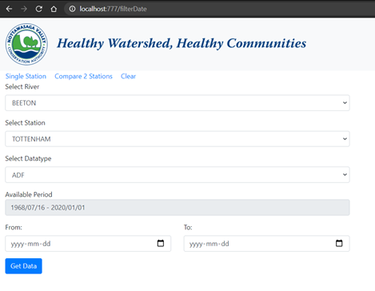
Major Research Project: Building Crude Database and Database Management System for Flood Analysis, NVCA (Ontario, Canada)
Nottawasaga Valley Conservation Authority. The aim of project is flood analysis. Built a new database using HEC-DSS. Migrated old data to new database.
Developed python application to export/import data, also transform and filter data.
Created a Web application using Flask , HTML, CSS, JavaScript. Used ChartsJS for interactive charts.
Blog / Articles
AI Singularity and Ethical Concerns
What is “Singularity”?
AI singularity which can also be generalized as technological singularity or just singularity is when artificial intelligence surpasses and overtakes the human thinking. The term “singularity” was first popularized by Vernor Vinge in 1993 as he wrote that singularity would signal the end of the human era, and superintelligence would continue to improve itself in an exponential and incomprehensible rate. Also, Ray Kurzweil, an American investor and futurist predicts that by 2045 computers will be a billion times more powerful than all human minds in the world and defines the singularity as the moment in the future humans and AI supposedly converges (Caddwalladr, 2014). Also, public figure Stephan Hawking expressed his concern that a super-intelligent AI could lead to human extinction...
Get In Touch
Feel free to contact me for any questions.
{kind=link}
{kind=link}
{kind=link}
{kind=link}
{kind=link}
{kind=link}
{kind=link}
{kind=link}
{kind=link}
{kind=link}
{kind=link}
{kind=link}